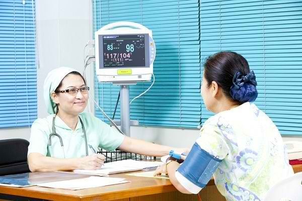

Kerja sama bilateral antara Indonesia dan Kanada di bidang kesehatan mencakup berbagai inisiatif yang bertujuan untuk meningkatkan kualitas pelayanan kesehatan, penelitian, dan penguatan kapasitas di kedua negara. Fokus utama dari kerja sama ini melibatkan program kesehatan masyarakat, penelitian medis, hingga pelatihan tenaga kesehatan.

1. Penanganan Pandemi dan Penyakit Menular
Kanada memberikan dukungan teknis dan pendanaan dalam penanganan pandemi COVID-19, seperti penyediaan alat kesehatan, vaksin, dan program peningkatan kapasitas tenaga medis di Indonesia.
Kedua negara bekerja sama dalam penelitian dan penanganan penyakit menular seperti tuberkulosis (TB), malaria, dan HIV/AIDS.
2. Penguatan Sistem Kesehatan
Kanada melalui program seperti Canada’s International Development Assistance membantu penguatan sistem kesehatan di Indonesia, termasuk program kesehatan ibu dan anak.
Bantuan untuk memperbaiki layanan kesehatan di daerah terpencil dan mendukung digitalisasi sistem kesehatan.
3. Pelatihan dan Kapasitas Tenaga Medis
Kerja sama dalam pelatihan tenaga kesehatan, terutama dalam bidang manajemen rumah sakit, perawatan intensif, dan kesehatan masyarakat.
Universitas dan lembaga penelitian di Kanada dan Indonesia, seperti Universitas Toronto dan Universitas Indonesia, menjalin kerja sama dalam penelitian kesehatan.
4. Penanganan Kesehatan Ibu dan Anak
Kanada mendukung program kesehatan ibu dan anak di Indonesia, termasuk pemberian gizi dan akses layanan kesehatan bagi perempuan hamil dan balita.
Program-program ini juga bertujuan mengurangi angka kematian ibu melahirkan dan kematian bayi.
5. Penelitian dan Inovasi di Bidang Kesehatan
Kerja sama antara lembaga penelitian Indonesia dan Kanada dalam mengembangkan solusi inovatif, seperti teknologi telemedicine dan bioteknologi.
Penelitian bersama tentang dampak perubahan iklim terhadap kesehatan masyarakat.
6. Kesehatan Lingkungan dan Perubahan Iklim
Kanada membantu Indonesia dalam meningkatkan kesadaran tentang dampak lingkungan terhadap kesehatan, termasuk polusi udara dan sanitasi.
Proyek bersama untuk mendukung pengelolaan limbah medis yang lebih ramah lingkungan.